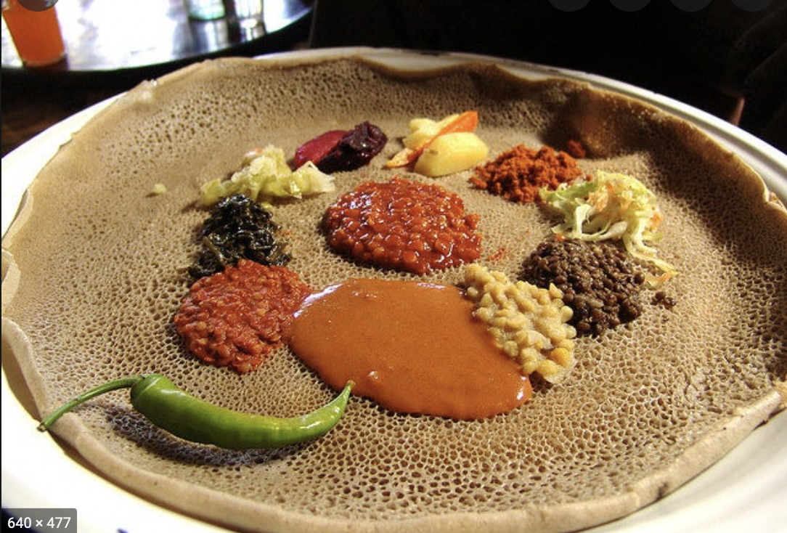

This is shiro
Ingredients:
- 1 large red onion, coarsely chopped
- 10 garlic cloves, peeled
- ½ cup canola oil
- 2 tablespoons homemade or store-bought berbere spice mix
- Fine sea salt
- 3 medium vine-ripened tomatoes (about 11 ounces), coarsely chopped
- ½ cup chickpea flour
- 1 to 2 jalapeños, stemmed and thinly sliced
- Injera or baguette, for serving
Preparation:
-
Step 1:
Prepare the shiro: Place the onion and garlic in a food processor, and pulse until very finely minced, stopping periodically to scrape down the sides of the bowl with a rubber spatula to ensure even chopping. Set aside.
-
Step 2:
Set a large Dutch oven or similar pot over medium-low heat. When the pot is warm, add oil, onion puree, 2 tablespoons berbere and a large pinch of salt. Stir to combine, then cover pot, and let aromatics cook gently while you prepare tomatoes.)
-
Step 3:
Place tomatoes in the food processor, and pulse until puréed. Add to onion mixture, and increase heat to high. When mixture boils, reduce heat to low, and whisk in chickpea flour. The mixture will be quite thick, like peanut butter. While stirring, slowly pour in 2 cups water in a thin stream to loosen the mixture. Keep stirring until the mixture becomes smooth and integrated.
-
Step 4:
Increase heat to medium-high to bring shiro to a boil, then reduce heat to low, and simmer for about 5 minutes to cook off the raw taste of the chickpea flour and integrate all the flavors. Stir in the jalapeños and season to taste with salt.
Step 5:
Serve immediately. (Leftovers can be stored in an airtight container in the refrigerator for up to a few days. Store unused berbere in a cool, dark place for up to 3 months.)